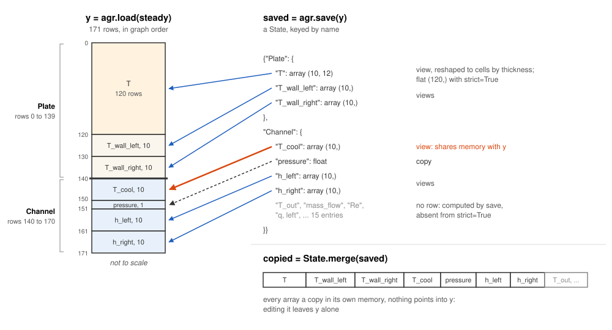
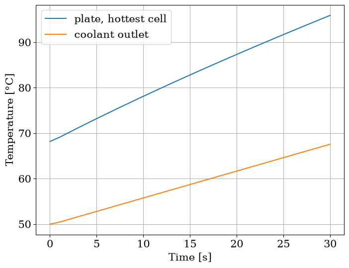

Read results
Run a transient and set tolerances ends with a Solution. This page reads one, and a steady state, by name, on the plate and channel pair of Build a plate, an assembly or a rod: saved two ways, at a time, into a table, as a history, and through a saved array that is a view of the vector.
[1]:
from functools import partial
import matplotlib.pyplot as plt
import numpy as np
from matplotlib import rc
rc("font", family="serif", size=15)
from stream import State
from stream.calculations import ChannelAndContacts, Fuel, Solid
from stream.composition import symmetric_plate, symmetric_plate_steady_state, uniform_x_power_shape, x_boundaries
from stream.physical_models.heat_transfer_coefficient import spl_htc, wall_heat_transfer_coeff
from stream.physical_models.pressure_drop import friction_factor, pressure_diff, rectangular_laminar_correction
from stream.pipe_geometry import EffectivePipe
from stream.substances import light_water
The pair and its state
The cell rebuilds the pair and solves it at 0.5 kg/s. Its aggregator binds a coastdown instead, \(\dot m(t) = \dot m_0 / (1 + t / 20\,\mathrm{s})\), which starts at the solved flow. symmetric_plate_steady_state returns a State: a dict keyed by calculation name, then by variable name. The keys are names, never the calculation objects. agr.load(state) builds the vector from it, reading every variable of every calculation; State.uniform(calculations, value, *names) fills the
named variables with one value, and a state that lacks one raises a KeyError. There is no partial load.

The 171 rows of ``y`` in graph order: the Plate slice, rows 0 to 139, then the Channel slice, rows 140 to 170, where ``pressure`` takes one row; the computed entries of the saved state own none.
[2]:
length, width, cells = 0.7, 0.070, 10
clad_N, fuel_N, clad_w, meat_w = 2, 8, 0.0005, 0.0006
z = np.linspace(0.0, length, cells + 1)
meat = np.zeros((cells, fuel_N + 2 * clad_N), dtype=bool)
meat[:, clad_N:-clad_N] = True
fuel = Fuel(
z_boundaries=z,
x_boundaries=x_boundaries(clad_N, fuel_N, clad_w, meat_w),
material=Solid.from_array(np.where(meat, Solid(3500, 750, 40), Solid(2700, 900, 167))),
y_length=width,
power_shape=uniform_x_power_shape(cells, fuel_N, clad_N, clad_w, meat_w, length),
meat_indices=meat,
name="Plate",
)
pipe = EffectivePipe.rectangular(length=length, edge1=width, edge2=0.0022, heated_edge=width)
aspect_ratio = pipe.depth / pipe.width
h_spl = spl_htc("regime_dependent", re_bounds=(2000.0, 5000.0), Lh=length, aspect_ratio=aspect_ratio)
f = friction_factor("regime_dependent", re_bounds=(2000.0, 5000.0), k_R=rectangular_laminar_correction(aspect_ratio))
channel = ChannelAndContacts(
z_boundaries=z,
fluid=light_water,
pipe=pipe,
h_wall_func=partial(wall_heat_transfer_coeff, h_spl=h_spl),
pressure_func=partial(pressure_diff, f=f),
name="Channel",
)
mdot0, p_abs, power, T_in = 0.5, 1.8e5, 25e3, 38.0
steady = symmetric_plate_steady_state(channel, fuel, mdot=mdot0, p_abs=p_abs, power=power, Tin=T_in)
funcs = {channel: dict(mdot=lambda t: mdot0 / (1 + t / 20.0), p_abs=p_abs, Tin=T_in), fuel: dict(power=power)}
agr = symmetric_plate(channel, fuel, funcs=funcs).to_aggregator()
y = agr.load(steady)
print(f"type: {type(steady).__name__}")
print(f"calculations: {sorted(steady)}")
print(f"rows: {len(y)}")
try:
agr.load(State.uniform(agr.graph, 40.0, "T", "T_cool"))
except KeyError as err:
print(f"KeyError: {err.args[0]}")
type: State
calculations: ['Channel', 'Plate']
rows: 171
KeyError: T_wall_left
The state loads to 171 rows; the uniform one stops at the first variable it lacks.
Two key sets
agr.save(y) returns every variable plus the computed values that own no row; agr.save(y, strict=True) returns the variables only. load reads the variables and nothing else, so both load back to y, and an edited analysis value is never read back.
[3]:
full, strict = agr.save(y), agr.save(y, strict=True)
for name in full:
print(f"{name} rows: {sorted(map(str, strict[name]))}")
print(f"{name} computed: {sorted(map(str, set(full[name]) - set(strict[name])))}")
print(f"full loads to y: {np.array_equal(agr.load(full), y)}")
print(f"strict loads to y: {np.array_equal(agr.load(strict), y)}")
print(f"plate T, full: {full['Plate']['T'].shape}; strict: {strict['Plate']['T'].shape}")
print(f"scalars: {sorted(map(str, full.filter_values(np.isscalar)['Channel']))}")
Plate rows: ['T', 'T_wall_left', 'T_wall_right']
Plate computed: []
Channel rows: ['T_cool', 'h_left', 'h_right', 'pressure']
Channel computed: ['Gr, left', 'Gr, right', 'Pe', 'Re', 'T_in', 'T_out', 'T_wall, left', 'T_wall, right', 'absolute_pressure', 'mass_flow', 'power', 'q, left', 'q, right', 'static_pressure', 'velocity']
full loads to y: True
strict loads to y: True
plate T, full: (10, 12); strict: (120,)
scalars: ['T_in', 'T_out', 'mass_flow', 'power', 'pressure']
The plate adds only a shape: its temperatures are cells by thickness in the full state, flat in the strict one. filter_values keeps the values a predicate accepts, here the scalars: the channel’s pressure is a row, its pressure gain; mass_flow and T_out are computed.
Save at a time
save(y, t) evaluates the bindings at t, 0 by default, so a computed value reads its schedule at that time. strict is the third parameter: save(y, True) binds True to the time.
[4]:
print(f"mass_flow, t = 0 s: {agr.save(y)['Channel']['mass_flow']:.4f} kg/s")
print(f"mass_flow, t = 10 s: {agr.save(y, 10.0)['Channel']['mass_flow']:.4f} kg/s")
mass_flow, t = 0 s: 0.5000 kg/s
mass_flow, t = 10 s: 0.3333 kg/s
The same vector reports 0.5 kg/s at 0 s and the coastdown’s 0.333 kg/s at 10 s.
A table
state.to_dataframe() flattens a state into one row per number, with columns calculation, variable, i, j and value; i and j address a cell of an array, a scalar sits at (0, 0). State.from_dataframe reads it back, and a one-dimensional array returns as one row of a two-dimensional one.
[5]:
table = strict.to_dataframe()
print(table.head().to_string(index=False))
back = State.from_dataframe(table)
print(f"rows: {len(table)}")
print(f"T_cool shape back: {back['Channel']['T_cool'].shape}")
print(f"loads to y: {np.array_equal(agr.load(back), y)}")
calculation variable i j value
Plate T 0 0 41.870297
Plate T 0 1 41.963752
Plate T 0 2 42.069006
Plate T 0 3 42.156795
Plate T 0 4 42.215321
rows: 171
T_cool shape back: (1, 10)
loads to y: True
One row per entry of the vector, and the table loads back to it: load broadcasts the extra axis away. stream.state.to_dataframe takes a history too, and adds a time column.
A history
agr.save(sol) returns a dict from each output time to its State, the type stream.state.StateTimeseries, every row saved at its own time; strict does not apply to it. agr.at_times(sol, node, "name") returns one variable’s column of sol.data: two-dimensional, times by cells, for a variable on several rows, one-dimensional for a single row. It reads rows only, the plate’s temperatures flat as the vector holds them; a computed value comes from the history.
[6]:
t = np.linspace(0.0, 30.0, 31)
sol = agr.solve(y, t)
history = agr.save(sol)
T_cool = agr.at_times(sol, channel, "T_cool")
T_plate = agr.at_times(sol, fuel, "T")
T_out = [history[time]["Channel"]["T_out"] for time in sol.time]
print(f"output times: {len(history)}, last {max(history):.0f} s")
print(f"T_cool: {T_cool.shape}; pressure: {agr.at_times(sol, channel, 'pressure').shape}")
print(f"plate T: {T_plate.shape}")
print(f"outlet at 30 s: {T_out[-1]:.2f} °C")
print(f"hottest at 30 s: {T_plate[-1].max():.2f} °C")
fig, ax = plt.subplots(figsize=(8, 6))
ax.plot(sol.time, T_plate.max(axis=1), label="plate, hottest cell")
ax.plot(sol.time, T_out, label="coolant outlet")
ax.set_xlabel("Time [s]")
ax.set_ylabel("Temperature [°C]")
ax.grid()
ax.legend()
plt.show()
output times: 31, last 30 s
T_cool: (31, 10); pressure: (31,)
plate T: (31, 120)
outlet at 30 s: 67.56 °C
hottest at 30 s: 95.91 °C

Both temperatures climb as the flow falls: at 30 s the outlet is at about 67.6 °C and the hottest cell of the plate at about 95.9 °C.
Copy before editing
A saved array that owns rows can be a view, as T_cool is for this pair: writing into it writes into y, and the cell does so, then undoes it; the one-row pressure is a copy. State.merge(*states) combines states, later ones winning per variable, and copies every array, so State.merge(saved) is safe to edit.
[7]:
saved = agr.save(y)
row = agr.var_index(channel, "T_cool")
print(f"shares memory, T_cool: {np.shares_memory(saved['Channel']['T_cool'], y)}")
print(f"shares memory, pressure: {np.shares_memory(saved['Channel']['pressure'], y)}")
saved["Channel"]["T_cool"][0] += 10.0
print(f"y after editing save: {y[row][0]:.4f} °C")
saved["Channel"]["T_cool"][0] -= 10.0
copied = State.merge(agr.save(y))
copied["Channel"]["T_cool"][0] += 10.0
print(f"y after editing merge: {y[row][0]:.4f} °C")
print(f"shares memory, merge: {np.shares_memory(copied['Channel']['T_cool'], y)}")
shares memory, T_cool: True
shares memory, pressure: False
y after editing save: 48.2928 °C
y after editing merge: 38.2928 °C
shares memory, merge: False
The edit to the saved T_cool moved the vector by 10 K; the edit to the merged copy left the vector alone. A saved state that will be edited, or kept while y or sol.data changes, goes through State.merge first.
Both Pumps Trip reads an hour-long run this way, its reactivity saved at each output time over its first minute. The usual next task: Compute margins.